A multi-branch pharmacy operations platform with a Laravel web panel and Flutter mobile app, spanning catalog, purchasing, batch inventory, POS, cash oversight, and workforce workflows.
MY ROLE / SCOPEBuilt the Flutter mobile client and integrated it with the Laravel REST API. Contributed to product planning, feature specification, UI direction, and workflow implementation.
SOURCEPrivate repository
ILLUSTRATIVE PROJECT THUMBNAIL
Pharmacy ERP & POSPurchasing, stock, and branch operations.
Illustrative thumbnail · not an app screenshot
01 / THE PROBLEM
What the project needed to do.
Pharmacy operations connect a shared medicine catalog to branch-specific purchasing, expiring batches, stock movements, counter sales, and cash reconciliation. The system must keep these workflows traceable while ensuring each tenant and branch sees only actions allowed by its permissions.
02 / ENGINEERING HIGHLIGHTS
The work behind the interface.
Built the Flutter mobile client and integrated Laravel REST APIs with Dio. Riverpod providers and notifiers manage app state; typed models, repositories, and screens stay in separate layers. Session tokens and branch context accompany API requests, while shared Laravel services keep web and mobile workflows aligned.
01
Keep tenant and branch boundaries explicit
Tenant middleware resolves the authenticated organization and gates suspended or expired tenants. Branch assignments and permission checks define the operational scope for a request; server-side authorization remains the authority for protected actions.
02
Make stock changes traceable
The stock ledger records quantity changes with references and actors, while model guards restrict ledger updates and deletion. Receipt and sale flows use transactions, tenant-scoped balance queries, and row locks; sale allocation follows first-expiry-first-out (FEFO) order.
03
Connect web and mobile workflows
Integrated the Flutter app with shared Laravel REST endpoints using Dio. Requests carry the current session token and selected branch; centralized handling maps API errors, applies timeouts, and responds to expired sessions. Riverpod-managed session, role, branch, and shift state drives the appropriate mobile shell.
04
Account for cash-shift review
Registers, shifts, cash movements, expected and closing cash, variance, approval requests, and investigations form connected records for cashier accountability and manager review.
Multi-tenant organizations with branch assignments, role permissions, and web, mobile, and API workflows.
Medicine master data, pharmacy product catalogs, supplier and customer records, barcodes, units, and images.
Purchasing from purchase orders through goods receipt, invoices, supplier payments, and purchase returns.
Batch-based inventory with stock balances, a traceable stock ledger, expiry-aware alerts, adjustments, transfers, and audits.
POS sales with search and barcode lookup, cart, split-payment data, approval handling, voids, and returns.
Cash registers and shifts with opening and closing balances, cash movements, variances, and investigation records.
Employee records, attendance, leave, payroll, prescriptions, operational dashboards, and reports.
Flutter mobile client integrated with the Laravel REST API through Dio, with Riverpod-managed state and session-aware role and branch flows.
04 / FROM THE APP
A look at the real interface.
Swipe, drag, or use the arrows to browse screenshots.
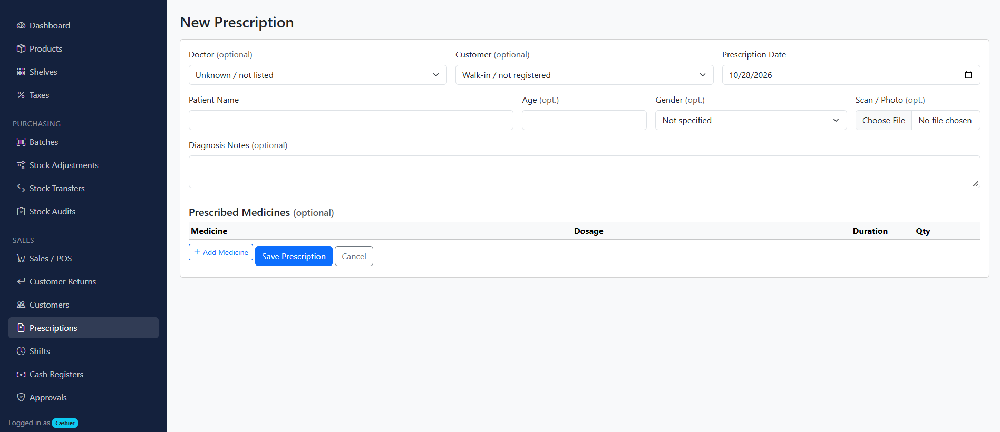
01Prescription entry form. The account header is removed; patient fields were blank in the supplied screen.
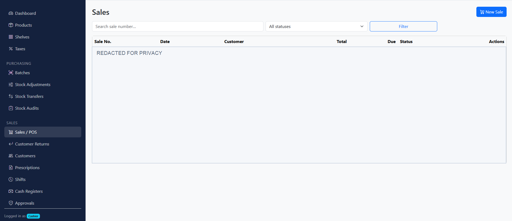
02Sales list and invoice filters. Customer names and transaction rows are redacted for privacy.
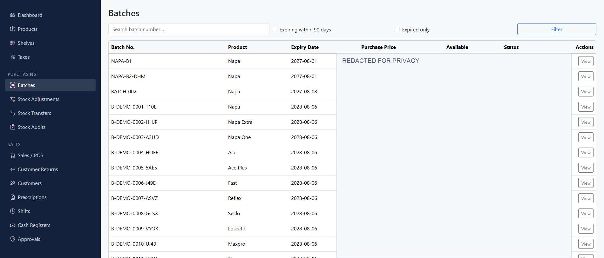
03Batch inventory: expiry filters and batch status. Account header, stock quantities, and purchase prices are redacted.
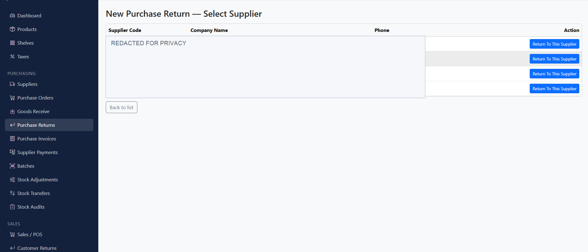
04Purchase-return supplier selection. Supplier names, codes, and phone numbers are redacted.
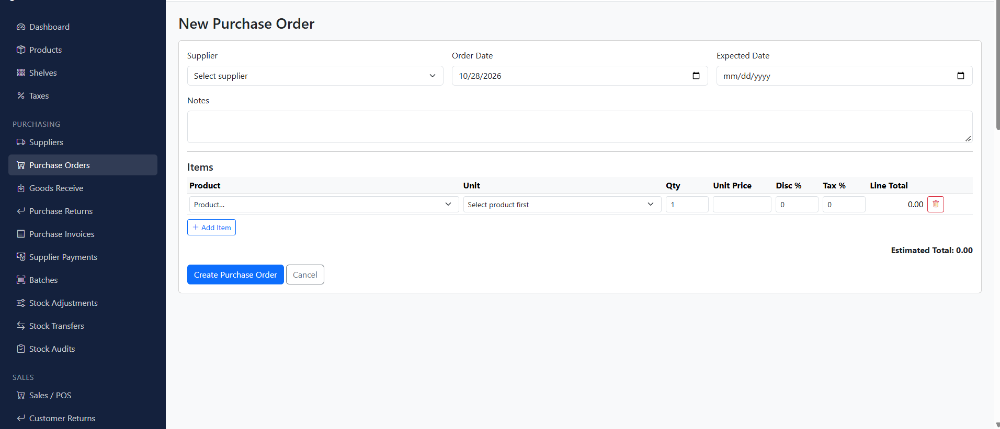
05Purchase-order entry: supplier, delivery dates, line items, tax, discounts, and estimated total. Personal account and branch details have been removed.
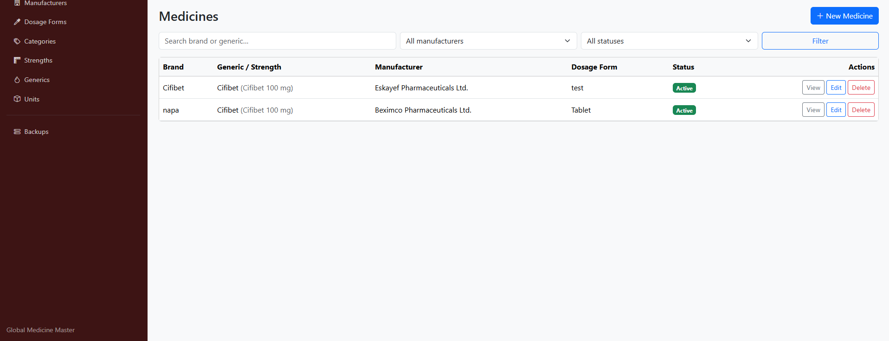
06Global medicine master: searchable medicines with manufacturer, dosage form, and status.
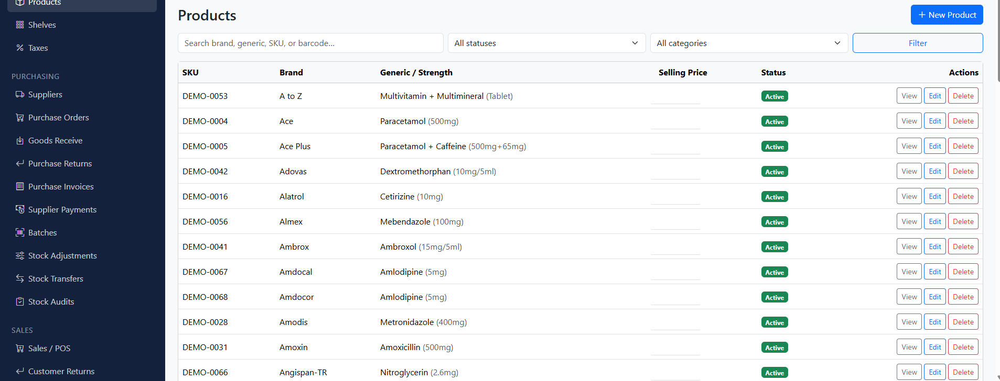
07Branch product catalog. Account details and the welcome banner are removed; the list demonstrates catalog search and management. Selling-price values are hidden.
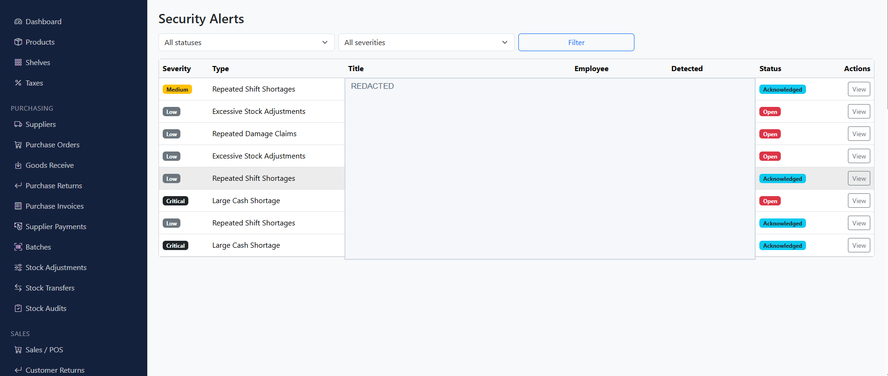
08Security-alert review screen. Staff identities and incident records are redacted.
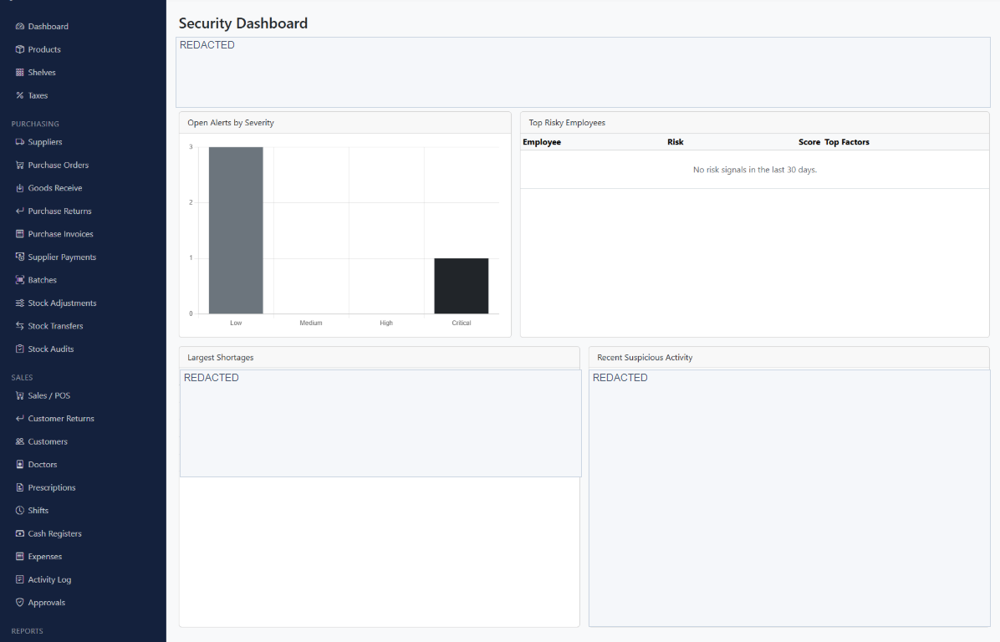
09Security oversight dashboard. Operational counts, staff references, and cash variances are redacted.
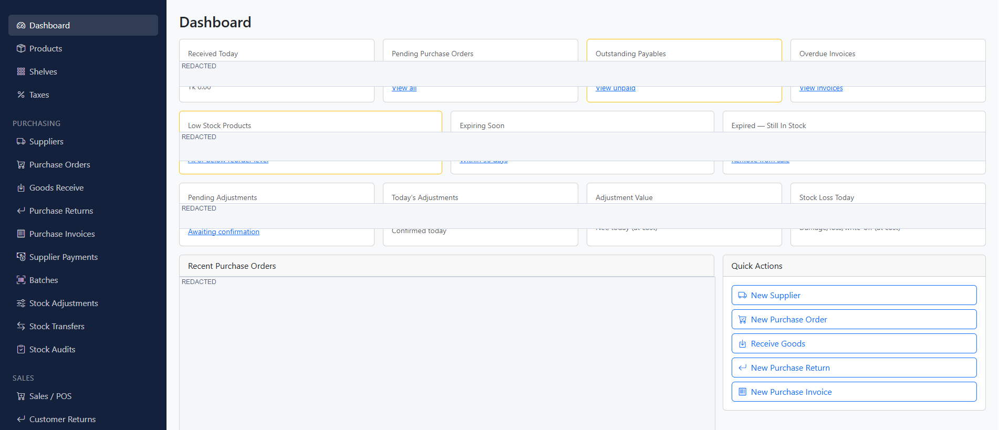
10Purchasing dashboard and workflow shortcuts. Financial and supplier records are redacted.
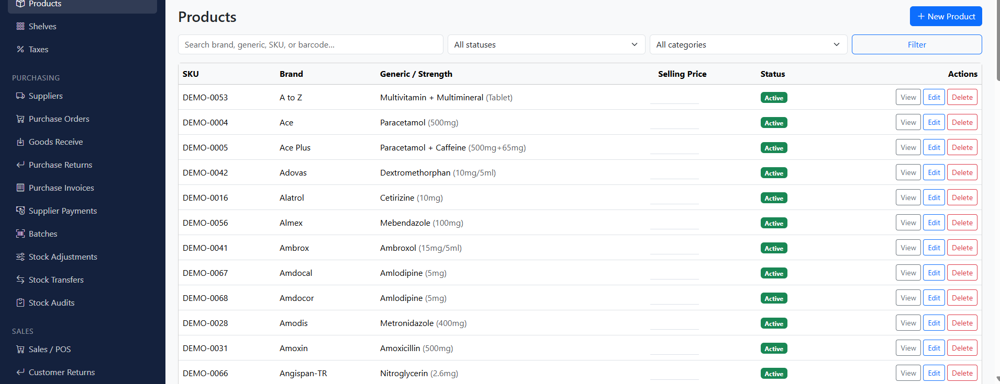
11Branch product catalog with medicine search and category filters. Account header and welcome banner are removed. Selling-price values are hidden.
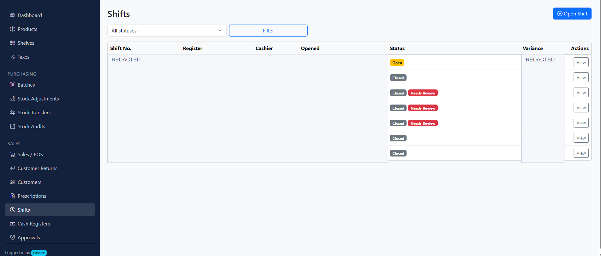
12Cash-register shift oversight. Staff names, dates, shift identifiers, and variances are redacted.
1 / 12
05 / RESULT & SCOPE
Where the work stands.
The reviewed implementation brings pharmacy catalog, purchasing, batch inventory, POS, cash-shift oversight, workforce modules, and reporting into web and mobile clients backed by shared Laravel services. Its data model and transaction flows are designed to make stock and cash changes traceable. Deployment outcomes or measured business impact are not claimed.
Based on the inspected project source and supplied technical notes. The source repository is private. Production deployment, real-world use, independent security audit, and end-to-end readiness have not been verified. The mobile receipt shares plain text; dedicated Bluetooth or thermal-printer integration is not claimed. Token/session caching is not offline-first transaction sync.